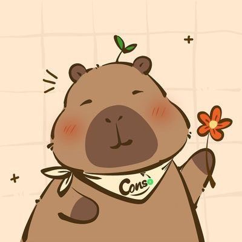

2023
年底我想明白了两件事，决定归零，重新开始。第一，我再也做不了量化交易业务了。第二，对我而言，Web3 + 出海是未来十年的机会。
重新认识你很高兴

很多人搞不清楚，我到底是 KOL 还是项目方。
其实，一个人本来就可以有很多身份。
说实话，我也没想过会有这么多身份。一开始只是想好好做项目，顺带和我的 TON 开发者社区的开发者们一起研究增长。但很多事情做着做着，就变成了现在这样，蝴蝶效应吧。
身份多了其实挺累的。因为每天工作以外，还要为了活跃粉丝群交易、管理社群。需要的时候做了这件事，最后要注意力转移时，断舍离又成了一门学问。
好在 2023 年，我从 “CZ” 那里学到一招：以年为单位，更新熟人朋友圈。我认真想了这个方法有没有道理，最后认为有道理，所以照着学了，从中受益。我真心觉得从零开始适合大多数人。
此处感谢大表哥助我悟道 @cz_binance
所以现在的我，就是 2023 年我选择要成为的我。如果哪天我感觉偏离人生轨道了，可能我会突然停更，转去别的社交平台认识新朋友，大家也不用感到意外。
从「悟道」开始，以年为单位更新自己。
年底我想明白了两件事，决定归零，重新开始。第一，我再也做不了量化交易业务了。第二，对我而言，Web3 + 出海是未来十年的机会。
我创建了 TON 增长实验室。TON 大火的时候，也和朋友们一起做了几款小游戏。我们以 TikTok 种草和裂变玩法为主，搭起增长飞轮，用极低成本累计获得了 2500 万用户。社区也成了 TON 最大的华语开发者社区，我成了 TON 基金会在华语开发者群体中唯一推荐的增长专家。
TON 小游戏退潮，我和合伙人一起创立了 Conso App，深挖 Telegram 生态，看中的是频道、社群和即时通讯的内容价值。6 月，Conso 在海外上线内测。依靠过去积累的增长经验，我们用两个月把安装和激活用户从 0 做到 100 万，日活最高达到 10 万。
到了 10 月，我们内部评估：作为一个 MEME 社交交易平台，Conso 要从全球最大的市场里选一个做冷启动——美国，还是华语？我选了华语，于是开始运营 X，开始逐渐有朋友关注上我。
为了给 Conso 积累种子用户，我以 Conso 联合创始人和 MEME 交易博主的身份活跃在 X 和 Telegram，成了半个 KOL。在 Conso 研发阶段，我通过 X 种草为产品带来了 1.3 万名华语测试用户；自己的粉丝群也发展到了 6000 人。
我相信为快不破，只有增长才能解决企业发展问题。如果看我近几年的经历就不难发现，我一直把自己的事业放在首位。做的很多事情，都是为了事业，而非个人得失，也是在用自己擅长的「增长」方法，解决公司不同阶段的问题。
大多数时候，爱好都要给事业让路。所以，我把粉丝群交给了信得过、擅长聪明钱交易的朋友接手。因为我大量精力投入，会阻碍产品的增长工作，且粉丝群也已经发挥了它的使命价值。
但这不代表我做的每件事、说的每一句话，都只为 Conso 发声。作为个人，我在 X 上得罪过不少人，也怒斥过诋毁底层、诋毁女性的博主；我也会真心夸 FOMO 的产品做得好，哪怕这是在给竞品免费带流量。
相对于利益，我更希望自己永远用辩证思维看待人和事，不说违心的话，不做违心的事。Conso 如果不是一个好用、被需要的产品，我肯定希望市场能反馈真话。
这些都是我愿意做、也觉得有意义的事，我会继续做下去。
Conso 联合创始人兼首席客服。想参与一个现象级应用的诞生，并让产品被真实需要。
在豚总增长实验室带头研究增长策略。从 TON 到 Telegram 生态，增长是我最擅长的方法。
也是一个最近连亏三个月的 MEME 博主、群主。真诚交易，不说违心的话。
我想参与一个现象级应用的诞生。
很高兴重新认识你，我是 George，姓 Wang。